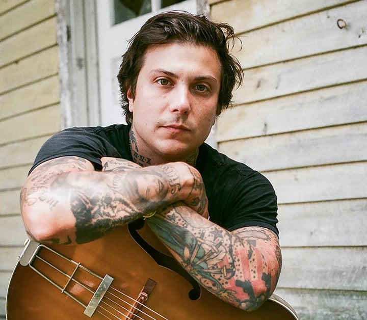

Personil Band
Gerard Way
Gerard Arthur Way (lahir 9 April 1977) adalah vokalis dan salah satu pendiri grup musik My Chemical
Romance. Ia adalah kakak kandung dari Mikey Way, basis grup musik ini. Nama orang tua Gerard adalah
Donald dan Donna Way. Donald berasal dari Skotlandia dan Donna Lee dari Italia, di mana kehidupan
itu
sulit untuk keluarganya.
Mikey Way

Michael James Way (lahir 10 September 1980) adalah basis untuk band My Chemical Romance dan dia
adalah
adik dari penyanyi My Chemical Romance.[1] Dia juga merupakan multi-instrumentalis dan penyanyi
latar
duo rock Electric Century.
Ray Toro
Raymond Manuel Toro-Ortiz (lahir 15 Juli 1977) adalah gitaris dan backing vocal dari My Chemical
Romance bersama dengan Frank Iero. Dia bermain gitar menggunakan gitar Gibson Les Paul.
Frank Iero

Frank Anthony Iero Jr. (lahir 31 Oktober 1981) adalah pemain gitar dan salah satu dari dua backing
vocal
My Chemical Romance setelah Ray Toro. Dia lahir di Belleville, New Jersey. Sebelum masuk My Chemical
Romance dia adalah anggota grup musik Pencey Prep.